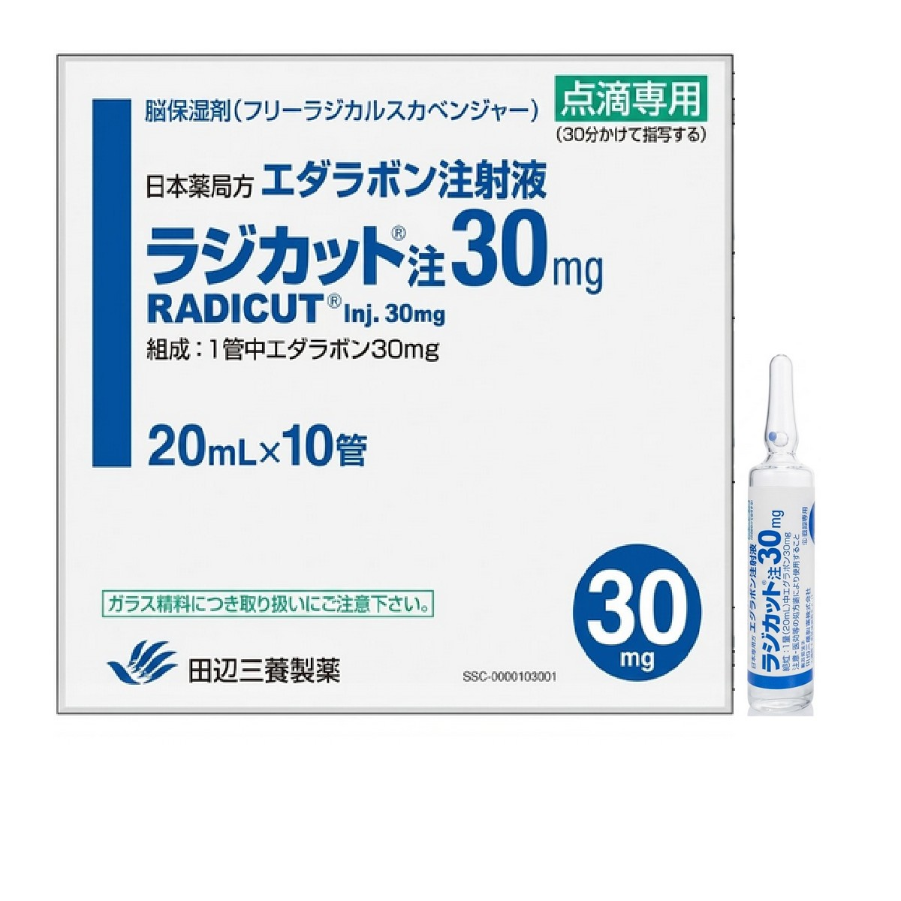
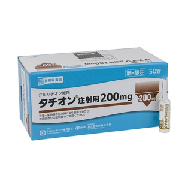
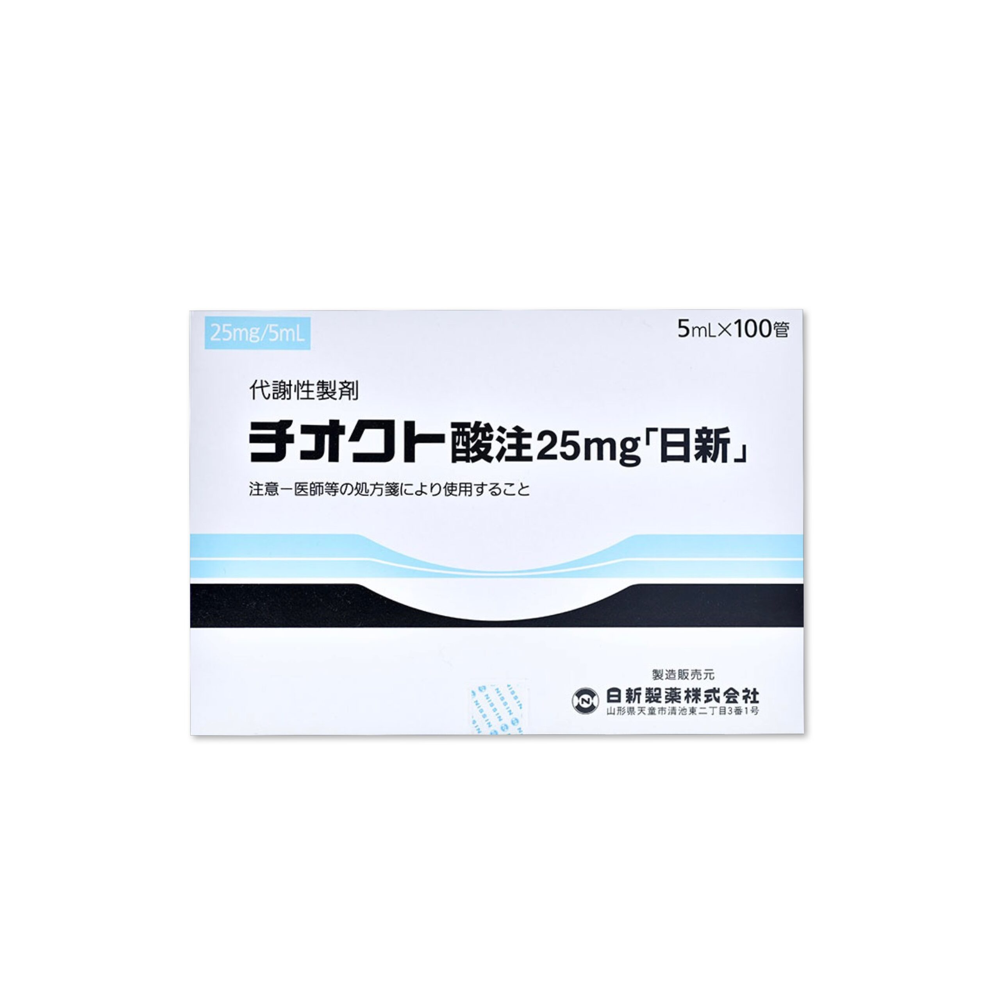
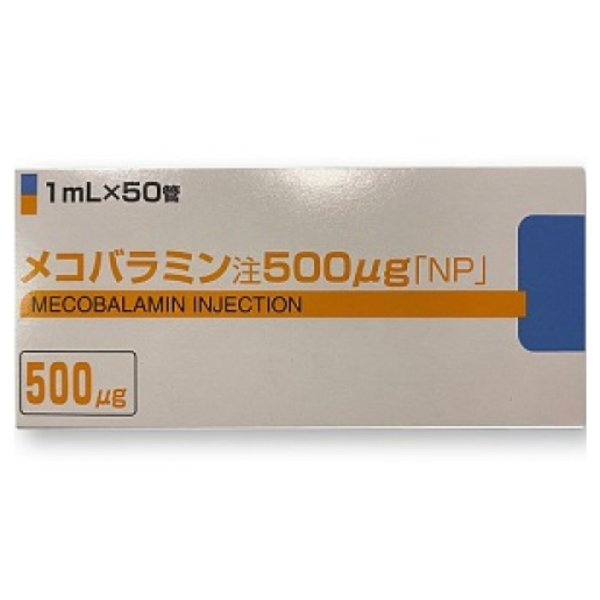
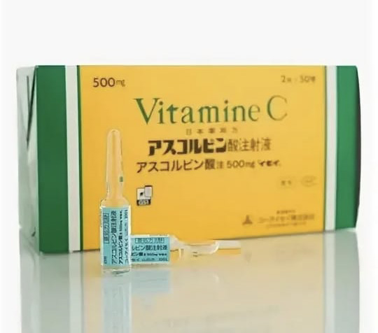
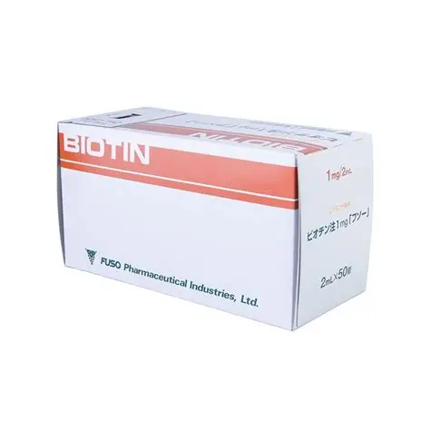
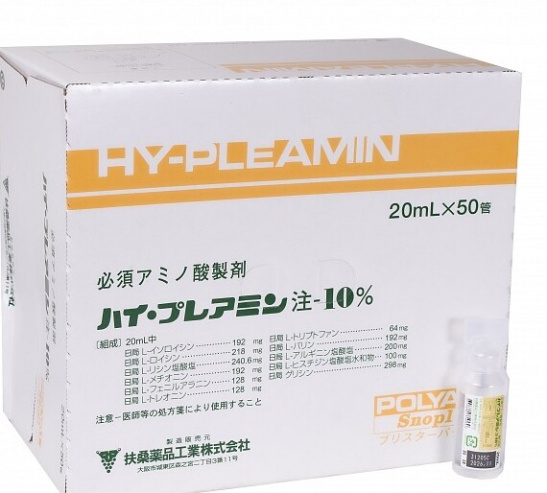
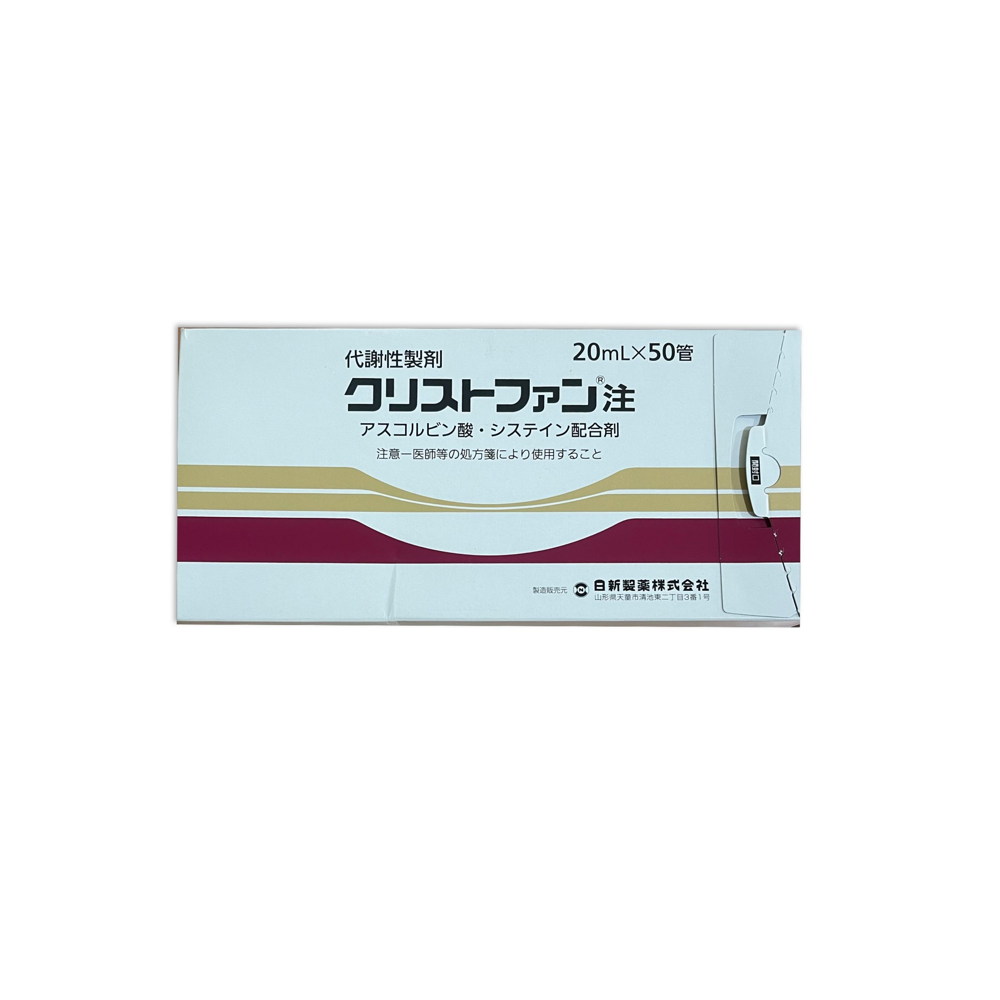

Препараты
Нажмите на карточку, чтобы открыть подробную информацию.

Описание
Лаеннек (Laennec) — препарат на основе гидролизата плаценты человека, содержащий более 50 биологически активных компонентов: аминокислоты, пептиды, факторы роста, нуклеиновые кислоты, витамины и минералы.Механизмы действия
Применение
Лаеннек вводится внутривенно в течение 30-40 минут(2 ампулы на 200 мл физраствора). 2-3 раза в неделю. Курс 5-10 процедур. После курса рекомендуются поддерживающие процедуры раз в 1-3 месяца.FAQ — Часто задаваемые вопросы
❓ Что такое Лаеннек?
Лаеннек — японский инъекционный препарат на основе гидролизата плаценты человека, содержащий аминокислоты, пептиды и другие биологически активные компоненты.
❓ Кто производитель препарата?
Japan Bio Products Co., Ltd. (JBP), Япония.
❓ В какой форме выпускается?
Стандартная упаковка — 50 ампул по 2 мл стерильного раствора.
❓ Для чего применяется Лаеннек?
Используется для поддержки функции печени, антиоксидантной защиты, восстановления после нагрузок, а также в anti-age программах.
❓ Можно ли использовать для омоложения кожи?
Да, препарат применяется в эстетической медицине для улучшения качества кожи, уменьшения сухости и поддержки регенерации тканей.
❓ С какого возраста применяется?
Обычно у взрослых старше 18 лет. В anti-age практике чаще используется после 30–35 лет.
❓ Как вводится препарат?
Чаще всего внутривенно капельно: 2 ампулы разводят в 200 мл физиологического раствора и вводят в течение 30–40 минут.
❓ Можно ли вводить внутримышечно?
Такая форма введения встречается, но схема должна назначаться врачом.
❓ Сколько процедур входит в курс?
Обычно 5–10 процедур 2–3 раза в неделю.
❓ Через сколько процедур заметен эффект?
Некоторые пациенты отмечают улучшение самочувствия после 2–3 процедур, более выраженные изменения обычно оценивают после полного курса.
❓ Можно ли сочетать с витамином C?
Да, такое сочетание часто используется в инфузионных программах под наблюдением специалиста.
❓ Совместим ли с Татионом и глутатионом?
Да, эти препараты часто применяются совместно в антиоксидантных программах, но дозировки должен определять врач.
❓ Можно ли применять мужчинам?
Да, препарат используется как у женщин, так и у мужчин для поддержки печени, восстановления после стрессов и физических нагрузок.
❓ Помогает ли при хронической усталости?
Некоторые пациенты отмечают уменьшение утомляемости и улучшение общего тонуса, однако эффект индивидуален.
❓ Какие противопоказания существуют?
Индивидуальная гиперчувствительность, выраженные аллергические реакции в анамнезе, беременность и лактация — только по назначению врача.
❓ Какие возможны побочные эффекты?
Покраснение в месте инъекции, зуд, чувство жара, аллергические реакции, редко — головокружение или тошнота.
❓ Можно ли делать капельницы дома?
Внутривенные инфузии должны проводиться медицинским персоналом с соблюдением стерильности и возможностью контроля состояния пациента.
❓ Нужно ли сдавать анализы перед курсом?
Желательно оценить общее состояние здоровья и функцию печени, особенно при наличии хронических заболеваний.
❓ Как хранить препарат?
Хранить в соответствии с инструкцией производителя, обычно в защищенном от света месте при рекомендуемой температуре.
❓ Можно ли использовать одновременно с косметологическими процедурами?
Да, Лаеннек нередко включают в программы восстановления после лазерных процедур, пилингов и других эстетических вмешательств, но схему должен подбирать специалист.

Описание
Melsmon — эликсир женской МОЛОДОСТИ!
Эффекты
Применение
Применяется только подкожно!
Лечение раннего климакса:3 мес. 2 ампулы х 1 раз в неделю
Лечение тяжелых симптомов климакса:2 -3 недели 1 ампула через день.3 мес. 2 ампулы х 2 раза в неделю. 1 -12 мес 1 ампула х 1 раз в неделю для закрепления эффекта.
Хроническая усталость, синдром «профессионального выгорания»:1 неделя 1 ампула через день2–12 мес. 1 ампула х 1 раз в неделю

Описание
В состав Curacen входит плацента человека, низкомолекулярные пептиды, 11 факторов роста, 18 аминокислот, цитокины, витамины, минералы, нуклеиновые кислоты.
Эффект
Применение
При инъекционном способе введения препарата — врач делает локальные уколы в проблемные места (носогубные и носослезные складки, морщины на лбу и переносице и так далее).
Полный курс инъекций (3–5, иногда до 10 сеансов), т. к. активные вещества препарата обладают накопительным эффектом.

Описание
Радикат защищает клетки головного мозга пациентов, страдающих нарушением мозгового кровотока и кровообращения (БАС).
Эффект
Применение
1) взрослым по 1 ампуле(30 мг) за раз, разбавляя физраствором, 30 минут, утром и вечером – разделяя одну дозу на 2 раза.
В течение 14 дней. 2) за раз по 2 ампулы (60 мг), разбавляя физраствором, 60 минут, 1 раз в день.
В течение 14 дней, после чего 14 дней пропустить, препаратом не пользоваться (таким образом общий цикл лечения составляет 28 дней). второй цикл 10/14

Описание
Татион (глутатион, glutathione, tathion) защищает клетку от токсичных свободных радикалов, а также определяет окислительно-восстановительные характеристики внутриклеточной среды.
Основная информация
Применение
Применять по 1-5 ампулы в день внутримышечно или внутривенно с физраствором. Японские ампулы Татион используют в коктейлях красоты:5 ампул Лаеннек + 5 ампул Татион + 200ml физ.раствор + Витамин C ( по желанию)

Описание
Глутатион – один из самых мощных антиоксидантов, который защищает наш организм от вредных воздействий окружающей среды. Татион помогает укрепить иммунную систему, улучшить кожу, уменьшить усталость и повысить энергию.
Основная информация
Применение
Применять по 1-5 ампулы в день внутримышечно или внутривенно с физраствором. Глутатион, можно использовать в коктейлях красоты: 5 ампул Лаеннек + 5 ампул Глутатион + 200ml физ.раствор + Витамин C ( по желанию)

Описание
Тиоктовая кислота (также альфа-липоевая кислота, липоевая кислота, октолипен) представляет собой сероорганическое соединение, естественным образом синтезируемое у животных для аэробного метаболизма.
Основная информация
Дозировка
Взрослым применять 10-25 мг действующего вещества в день в виде 1 внутривенной, внутримышечной или подкожной инъекции. Дозировка может быть скорректирована врачом.

Описание
Инъекции мекобаламина 500 мкг используются, в первую очередь, у пациентов с дефицитом витамина В12. Однако способность восстанавливать аксоны периферических нервов также делает мекобаламин эффективным для лечения боли и периферической невропатии.
Основная информация
Применение
Способ применения: для взрослых общий протокол лечения предполагает внутримышечную или внутривенную инъекцию 1 раз в день, 3 раза в неделю.

Описание
Витамин С в ампулах для лица, тела и кожи головы – это жидкая форма аскорбиновой кислоты, отличающаяся от таблеток и наружных эссенций прямым и быстрым попаданием в кровь.
Основная информация
Дозировка
По 1-4 ампуле внутримышечно или внутривенно по назначению врача или специалиста. Возможно использование с препаратом лаеннек.

Описание
Биотин (витамин Н, витамин В7) – это водорастворимый витамин группы В, часто называемый в народе «витамином красоты». Биотин обладает целым рядом ярко выраженных терапевтических эффектов
Дозировка
Для омоложения и очистки организма. По 1 -2 ампуле в день. Курс 3-10 процедур.

Описание
Препарат широко применяется в Японии для поддержки здоровья, а так же обеспечения нормального функционирования и восстановления организма пациентов на клеточном уровне в сжатые сроки.
Дозировка
Обычно взрослым вводят от 20 до 500 мл в сутки, медленно, внутривенно или через капельницу. Скорость введения составляет около 10 г за 60 минут. Желательно рассчитывать по времени от 80 до 100 минут на 200 мл / для взрослого

Описание
Crystfan (Кристфан) состоит из продукта метаболизма аминокислоты цистеина (L-цистеина) и витамина С. L-цистеин участвует в синтезе гормонов, иммуноглобулинов и других белков, коллагена, глутатиона (мощного нейро и гепатопротектора).
Дозировка
Способ применения: от 2 до 20 мл взрослому человеку вводят подкожно, внутримышечно или внутривенно один или два раза в день.